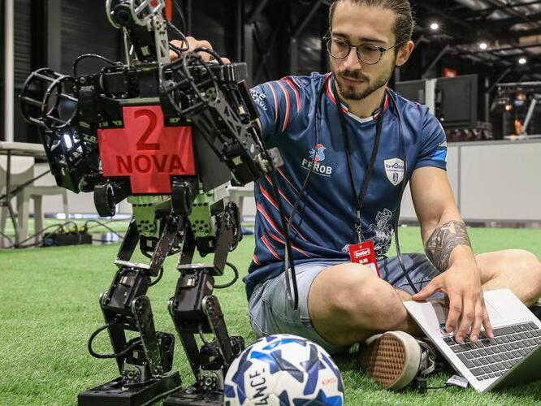
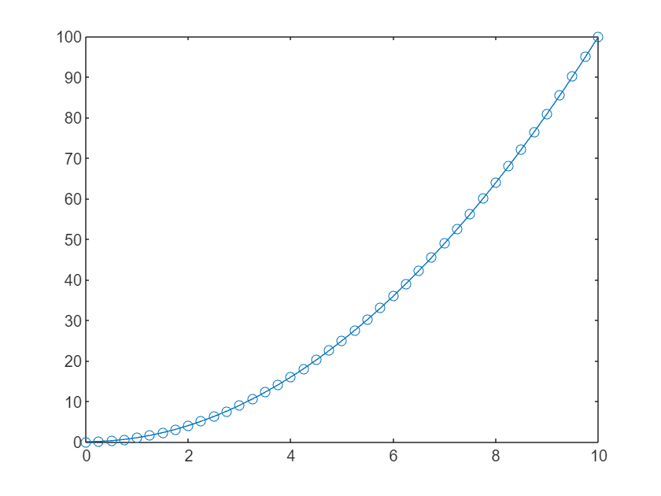
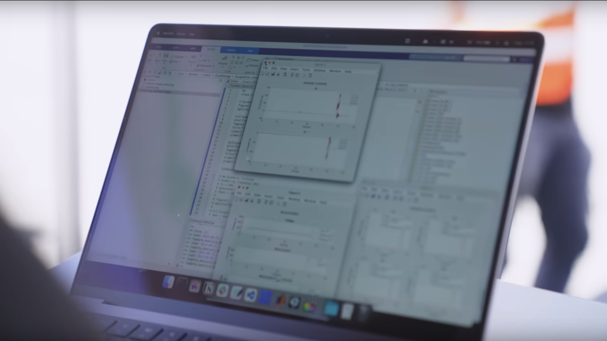

MATLAB CMU Links:
This is a preliminary page, it will be updated in the future
Join our Discord!
New '\' operator in R2024a!

Visualize Coverage Maps over Lunar Terrain using Ray Tracing
MATLAB R2024a Release Notes
Bode Plot of a Simulink Model

WIDS Datathon Registration
MATLAB ARM Challenge Pre-Registration
TIME Magazine Best Inventions of 2023
MATLAB Quantum Computing Cheat Sheet
'awesome-matlab-students' GitHub Repository
MATLAB Flipbook Mini Hack 2023 Entries
Modeling a Robot with Simulink and Simscape Multibody

Low-Code Data Analysis Webinar Registration
MATLB ML Tutorials
Lawrence Livermore Laboratory Nuclear Fusion
Register For MATLAB Onramp S24!

Inspiration behind MathWorks Logo:
Part 1
Part 2
Part 3
Part 4
Part 5
Kelp Wanted Challenge
Max Planck Institute - Tuning LIGO with MATLAB Deep Learning toolbox
MATLAB's AI Chat Playground - Phil Parisi
PID Controller MATLAB App
.png)
Learn Calculus Using the Symbolic Math Toolbox
.png)
Access ChatGPT API Through MATLAB
MATLAB AI Playground

RoboCup
Quantum Computing in MATLAB

Applied Linear Algebra Courseware

New solution framework for Ordinary DiffEqs 2023b

Simulink Student Challenge

MATLAB Students GitHub

ETH Zurich 0-100kph WR
.png)
Download R2023b Here!
Release Notes

ShortLink Uses Model-Based Design with Simulink and HDL Coder to Develop an IEEE 802.15.4 Receiver